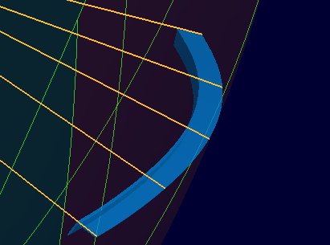

ロンジ
ロンジ
ロンジを作成ます。(条材を曲面、曲線上に作成する機能です。)


操作方法
パラメータを入力すると作成形状がプレビュー表示されます。形状の確認後、OKボタンで実行します。
パラメータ
- 作成方法
以下の作成方法があります。
- 座標軸方向指定
ロンジと取り付ける曲面と,ロンジの取付位置や方向、長さを絶対座標値で指定して作成します。
- 基準直線指定
ロンジと取り付ける曲面とロンジの取付方向を示す直線を指示して作成します。


- 取付線指定
ロンジと取り付ける曲線とロンジの取付方向を示す直線を指示して作成します。

- 座標軸方向指定
- 形状


ロンジの断面形状、寸法を選択、設定します。(既定寸法は設定可能です。)
- 取付面(座標軸方向指定,基準直線指定)
ロンジを取り付けるフェイスを選択します。(複数可）
- 基準直線(基準直線指定,取付線指定)

ロンジの取付方向を示す直線を選択します。(複数可)
アングル方向反転をチェックしてロンジのアングルの方向を反転することができます。
- 取付線(取付線指定)
ロンジを取り付ける基準線を選択します。
- 取付位置(座標軸方向指定)

- 骨材方向,取付方向

取付方向は"取付方向,ロンジの向き"で選択します。 - 取付位置
取付平面の位置(ロンジの向きの方向軸上の座標値）を指示します。
- 骨材方向,取付方向
- コピー(オプション、座標軸方向指定)

コピー数、オフセット値を指定して一度に複数のロンジを作成できます。
- 板逃方向

ロンジの取付位置の板逃を指定します。


- 端部1,2(座標軸方向指定 以外の場合はオプション)


ロンジ端部の形状を設定します。形状、寸法を選択、設定します。(既定寸法は設定可能です。)
端部の位置は要素あるいは座標値（座標軸方向指定の場合のみ）で設定します。
(形状一覧)
- 端部1,2スカラップ(オプション)

ロンジ端部にスカラップを設定します。形状、寸法を選択、設定します。(既定寸法は設定可能です。)
(形状一覧)